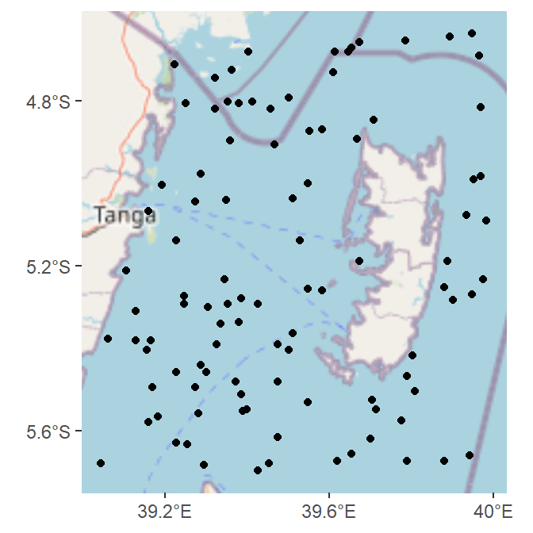
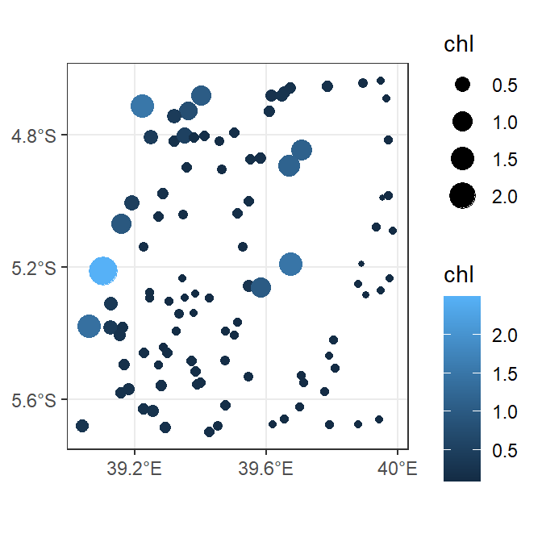

Extracting values from raster image using terra package in R
Introduction
When working with raster images, you may need to obtain the values of certain points from the raster for further analysis. This is often achieved by extracting specific values at particular points. The R packages terra (Hijmans, 2024) and tidyterra (Hernangómez, 2023) provide tools to efficient extract these values, whether you generate random points or have pre-defined locations. Below is a simplified overview of the process:
Before starting, ensure you have both terra and tidyterra installed and loaded into your R environment. Other packages such as sf also will be used in this post.
Data
We will use chlorophyll-a data collected along the Pemba Channel in Tanzania coastal waters. The data will be loaded using rast() function of terra package (Hijmans, 2024).
class : SpatRaster
dimensions : 244, 244, 3 (nrow, ncol, nlyr)
resolution : 0.004496807, 0.004496807 (x, y)
extent : 38.90161, 39.99883, -5.699434, -4.602213 (xmin, xmax, ymin, ymax)
coord. ref. : lon/lat WGS 84
source : pemba_crop.nc
names : flags, chl, land_mask We may then plot our data and visualize the distribution of the values in a map;
Define your points
To generate random points within our water-covered study area, we will use the spatSample() function from the terra package. Focusing on the chl layer of our dataset, we will produce 100 random points using the method = "random" argument. To ensure that only points within the water body are considered, we will employ na.rm = TRUE to exclude any points falling on land where chlorophyll data is absent (represented as NA). The resulting output will be a SpatVector point geometry containing the generated 100 points and their corresponding chlorophyll values.
pemba.data = spatSample(pemba |> select(chl),
size = 100,
method = "random",
na.rm = T,
as.points = T,
values = T)
pemba.data class : SpatVector
geometry : points
dimensions : 100, 1 (geometries, attributes)
extent : 39.04326, 39.98309, -5.697185, -4.635939 (xmin, xmax, ymin, ymax)
coord. ref. : lon/lat WGS 84
names : chl
type : <num>
values : 0.2281
0.1174
0.1519Plotting points
Next, we will visualize our points on a map to observe their distribution. As shown in Figure 1, all our randomly generated points fall within the water, with none located on land.
ggplot()+
ggspatial::annotation_map_tile(type = "osm", zoom = 8)+
ggspatial::layer_spatial(data = pemba.data)+
scale_x_continuous(breaks = seq(39.2,40,0.4),
labels = metR::LonLabel(lon = seq(39.2,40,0.4)))+
scale_y_continuous(breaks = seq(-5.6,-4.6,0.4),
labels = metR::LatLabel(lat = seq(-5.6,-4.6,0.4)))
The extracted spatvector points include chlorophyll values for each point, as illustrated in Figure 2.
pemba.data |>
ggplot() +
geom_spatvector(aes(color = chl, size = chl))+
scale_x_continuous(breaks = seq(39.2,40,0.4),
labels = metR::LonLabel(lon = seq(39.2,40,0.4)))+
scale_y_continuous(breaks = seq(-5.6,-4.6,0.4),
labels = metR::LatLabel(lat = seq(-5.6,-4.6,0.4)))+
theme_bw() 
Extracting points as dataframe
Along with extracting your data in spatvector format, you may occasionally prefer to have your values in a dataframe. This can be achieved directly during data extraction. Instead of using the argument as.point = T, which returns the data as a spatvector, use the argument as.df = T to obtain the data in a dataframe format. Additionally, include the argument xy = T to capture the longitude and latitude coordinates for each point.
pemba.df = spatSample(pemba |> select(chl),
size = 200,
method = "random",
na.rm = T,
# as.points = T,
as.df = T,
values = T,
xy = T) |>
rename(lon = x, lat = y) |>
as_tibble()
pemba.df# A tibble: 200 × 3
lon lat chl
<dbl> <dbl> <dbl>
1 39.4 -4.90 0.145
2 39.4 -5.49 0.135
3 39.5 -5.30 0.149
4 39.5 -5.67 0.125
5 39.5 -5.25 0.138
6 39.2 -5.31 0.152
7 39.4 -5.02 0.118
8 39.6 -5.67 0.143
9 39.3 -5.54 0.169
10 39.3 -5.66 0.175
# ℹ 190 more rowsNow that your points are in a dataframe, you can use them for any analysis you wish to conduct!
Thank you for following and do not miss the next post!!